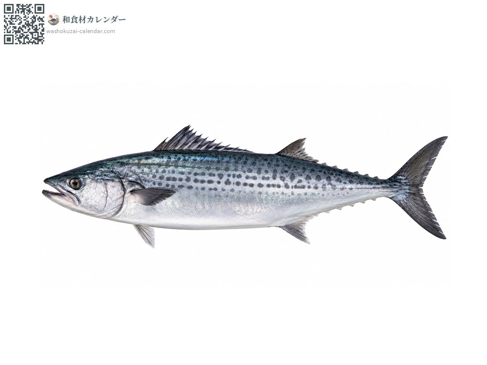
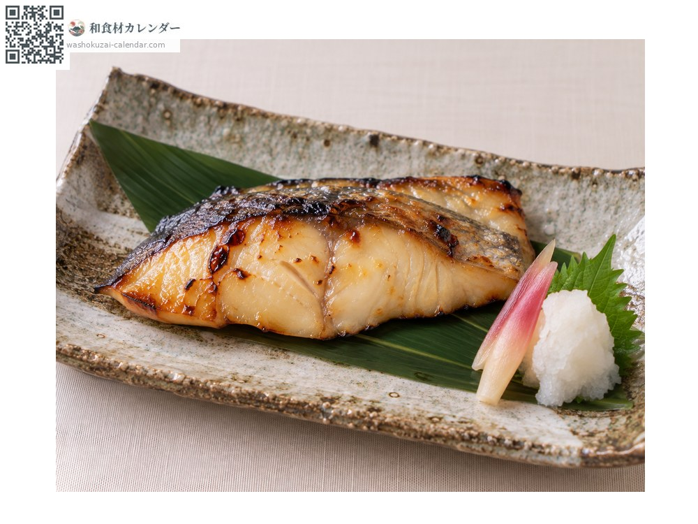
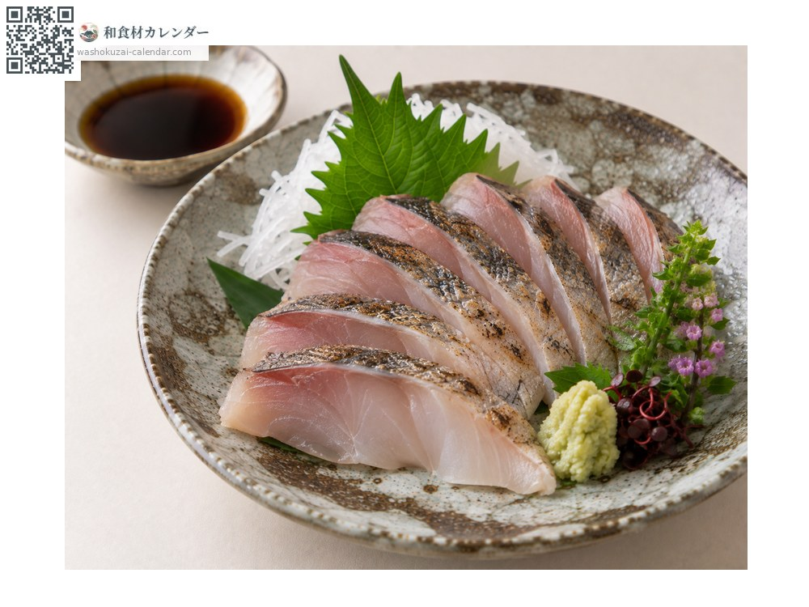
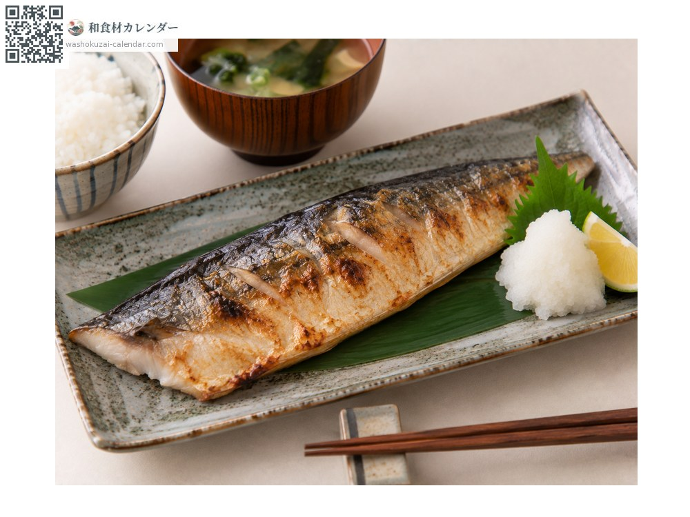
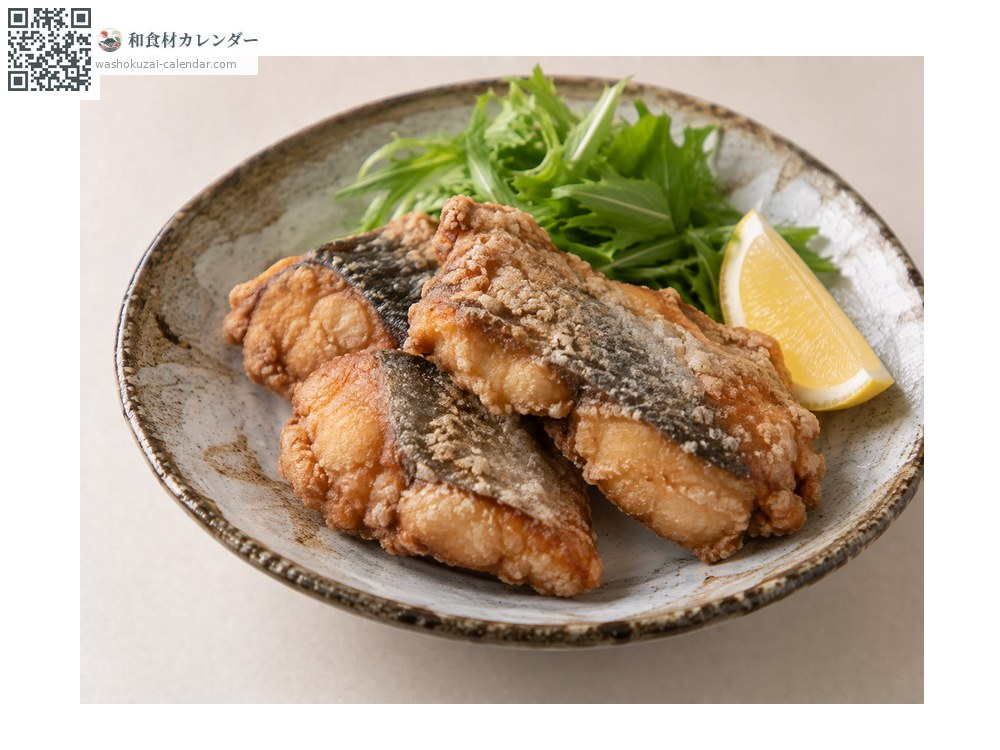

海鲜
蓝点马鲛
サワラ さわら sawara
别名sawara、sagoshi
应季时期为3月、4月、5月

应季时期
1月
2月
3月
4月
5月
6月
7月
8月
9月
10月
11月
12月
应季有供应
烹饪方法

西京烧（白味噌渍烤）
渍入甜白味噌后烧烤，味噌很配清淡的鱼肉。

生鱼片
够新鲜可生食，关西一带特别喜爱。

盐烤
鱼肉柔软，小心别弄散。

龙田扬（酱油腌后裹粉炸）
先腌过再油炸。
挑选方法
通体银亮、鱼肉紧实。切片肉色白且通透。
保存方法
鱼肉柔软易散，包保鲜膜冷藏并在1至2天内用完。
主要产地
小知识
汉字写作「䲠」，但关东偏好冬天的「寒䲠」。是各地区对时令看法不同的鱼。